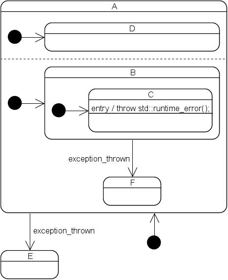

|
|
Boost Statechart 库定义 |
Boost.Statechart 文档使用了大量状态机专用术语, 其中大部分与 UML 规范中的用法相同. 本文档只给出 UML 标准未使用的术语的定义. UML 术语简介见 此处.
状态的上下文定义了它在状态层次结构中的位置. 状态的 直接上下文由以 Context 模板参数传入 simple_state 与 state 这两个类模板的内容决定. 它可以是状态机 (这使该状态成为 最外层状态), 也可以是其直接外层状态. 状态的 间接上下文则由此直接上下文的直接上下文、再上一层的直接上下文, 依此类推得出. 示例:

两个状态的最内层公共上下文是二者共有的第一个直接或间接上下文. 也称最小公共祖先 (Least Common Ancestor, UML).
最内层状态是自身没有内层状态的状态. 也称叶状态或简单状态 (UML). 注意, boost::statechart::simple_state<> 并 不是 UML 简单状态的模型.
状态内反应是一种既不退出也不进入任何状态的 反应. 也称内部转换 (inner transition / internal transition, UML).
最外层状态是自身没有外层状态的状态. 注意, 最外层状态不同于 UML 顶层状态 (top state). 状态机可以有任意多个前者, 但后者有且只有一个. Boost.Statechart 只支持最外层状态.
如果事件可以无限制地相互继承, 并且库允许为所产生的事件继承树的叶节点和中间节点定义反应, 那么这个 FSM 库就支持多态事件.
示例 (使用一个假想的 FSM 库, 因为 Boost.Statechart 不支持多态事件):
struct EvButtonPressed : Event // node
{
/* common button pressed properties */
};
struct EvPlayButtonPressed : EvButtonPressed {}; // leaf
struct EvStopButtonPressed : EvButtonPressed {}; // leaf
struct EvForwardButtonPressed : EvButtonPressed {}; // leaf
如果状态机需要在按下 任意按钮 (包括将来可能添加的按钮) 时作出反应, 可以为 EvButtonPressed 定义一个反应.
一个反应包含处理一个事件所引起的全部副作用. 反应可分为以下几类:
注意, 第 1 类反应可以与其他类型的反应组合 (状态内反应总是最先执行), 但第 2-4 类反应只能与第 1 类组合.
一个反应总是恰好关联一个状态类型和一个事件类型.
状态从进入之时起, 直到其最后一个 直接内层状态进入完毕之前, 都是不稳定的. 此外, 从其第一个 直接内层状态即将退出之前, 到该状态自身即将退出之前, 状态同样是不稳定的.
如果状态机当前至少有一个活动状态是不稳定的, 那么状态机就是不稳定状态机. 以下三种操作期间会出现这种情况:
在正常情况下, 状态机具有运行至完成 (Run-To-Completion) 语义, 即状态机在返回客户端之前或下一个事件出队之前总是稳定的. 因此, 状态机通常只在忙于处理某个事件时不稳定, 并在即将处理完该事件之前重新变为稳定. 然而, 当进入、退出或转换动作失败时, 就无法保证这一点了. 这种失败由一个事件报告, 而该事件必须在状态机不稳定期间处理. 不过, 异常事件的处理规则保证状态机返回客户端时绝不会处于不稳定状态 (详见 state_machine<>::process_event()).

修订于 29 December, 2006
版权所有 © 2003-2006 Andreas Huber Dönni
按 Boost 软件许可 1.0 版 (Boost Software License, Version 1.0) 分发. (随附文件 LICENSE_1_0.txt 或复制于 http://www.boost.org/LICENSE_1_0.txt)